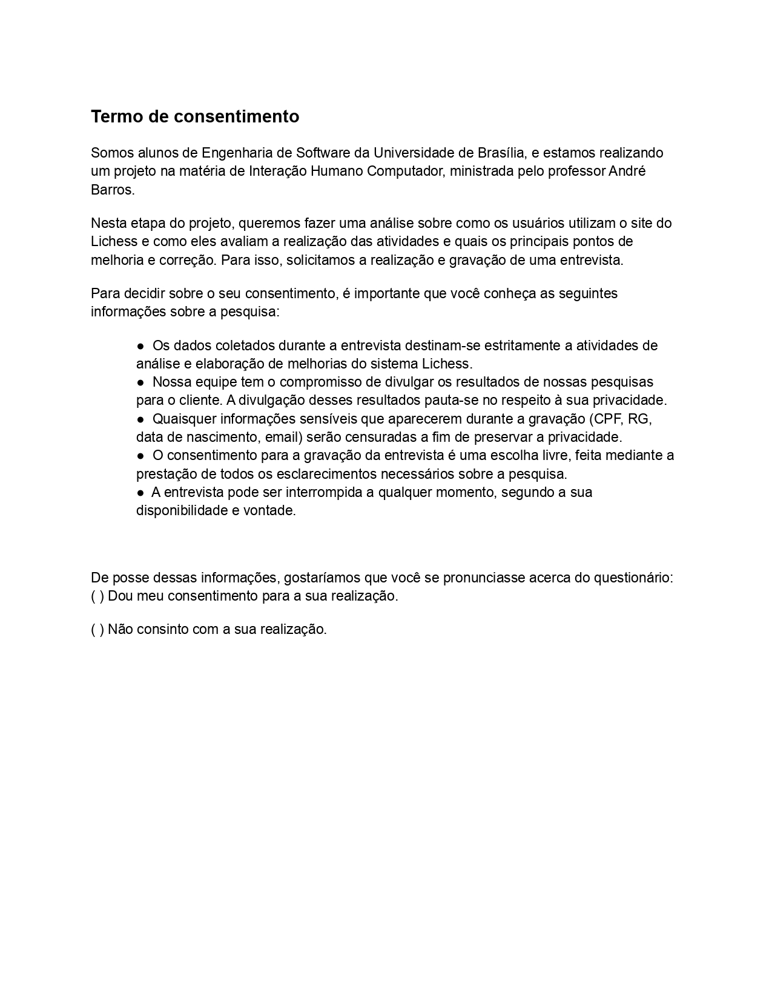

Planejamento da Avaliação do Protótipo de Papel
Introdução
Protótipos tem como objetivo permitir que usuários e stakeholders consigam interagir com um produto pensado. Isso é extremamente prática para coleta de pontos positivos e negativos acerca de uma funcionalidade ou o produto como um todo.
A utilização de protótipo de papel permite o foco na funcionalidade, deixando abstrato para o usuário questões como design, dessa forma a chance do usuário se distrair é menor.
Principais benefícios da utilização de protótipos são: reflexão do design, esclarecimento de requisitos e realização de testes iniciais.
Objetivos
Essa avaliação tem como objetivo entender no aplicativo e em fluxos alternativos, o que está sendo bem implementado e o que seria melhor alterar, tendo uma lista de feedback de usuários reais.
Metodologias
Para a maior fonte de informações possíveis o projeto de IHC Lichess decidiu utilizar entrevistas para coletar os pontos negativos e positivos do design. Além disso a entrevista permite realizar uma série de perguntas para direcionar a simulação.
Antes da entrevista duas ações devem ser executadas: elaboração do protótipo de papel e teste piloto.
Teste pilo é uma execução preliminar da entrevista, comumente realizada o próprio grupo de desenvolvedores ou pequena amostra de participantes a fim de avaliar os aspectos da avaliação e corrigir eventuais falhas antes da implementação definitiva, o que caso não seja feito, pode invalidar dados coletados.
O ordenamento e execução dessas atividades está indicado no cronograma abaixo
Cronograma
Abaixo na tabela 1, temos um cronograma das atividades necessárias para conclusão da avaliação do protótipo de baixa fidelidade
| Data | Ação | Papel - Nome | Papel - Nome |
|---|---|---|---|
| 31/12/2022 | Criação dos fluxos do protótipo de baixa fidelidade | Desenvolvedor - Lucas Macedo | Revisor - Mauricio |
| 01/01/2023 | Elaboração do teste piloto | Entrevistador - Davi | Entrevistado - Lucas Gabriel |
| 02/01/2023 | Correção do protótipo e de perguntas | Desenvolvedor - Davi | Revisor - Mauricio Machado |
| 05/01/2023 | Entrevista 1 | Entrevistador - Davi | Entrevistado - X |
| 06/01/2023 | Entrevista 2 | Entrevistador - Mauricio | Entrevistado - Y |
| 07/01/2023 | Entrevista 3 | Entrevistador - Davi | Entrevistado - Z |
| 09/01/2023 | Elaboração do relato de resultados | Desenvolvedor - Davi | Revisor - Mauricio |
Tabela 1: Cronograma avaliação protótipo de baixa fidelidade (Fonte: Mauricio Machado, 2022).
Ferramentas utilizadas
Seguindo os padrões de ferramenta definidos para o projeto o grupo irá realizar as entrevistas e suas gravações via Microsoft Teams. Protótipos serão elaborados via papel e caneta/lápis e então serão gerados arquivos pdfs para que os entrevistados tenham acesso e possam executá-los sem problema. Caso o usuário queira esboçar alguma ideia o ele será provido da ferramente adequada a qual será documentado na parte do relato de resultado dessa avaliação.
Protótipo de Papel
O protótipo de papel será realizado tendo como base as personas elicitadas e os principais fluxos identificados por ela.
Vale ressaltar, todos os fluxos terão como ponto de saída a página inicial do Lichess, além disso fluxos que não existem no site e estão identificados serão criados.
Dessa forma, os seguintes fluxos serão prototipados para avaliação:
- Criar uma partida
- Procurar uma partida
- Jogar partida com um amigo
- Entrar em um torneio
- Fazer filtragem do ranque pelo seu nome de usuário
- Acessar uma aula de xadrez
- Assistir uma partida de xadrez
- Reportar usuário por suspeita de trapaça
- Configurar o aplicativo a seu gosto (tema, linguagem, sons e acessibilidade)
Entrevista
Entrevistas serão realizadas com base nos documentos perfil de usuário e personas.
O auxílio para conseguir o acesso ao perfil foi realizado através do integrante Lucas Gabriel que tem acesso a um grupo de xadrez localizado na UnB (Universidade de Brasília).
Termo de consentimento
Dentro do termo, buscamos informar tanto sobre a pesquisa quanto a gravação das entrevistas, deixando claro que tudo ocorrerá garantindo o sigilo das informações sensíveis e somente com a devida autorização.

Figura 1: Termo de consentimento (Fonte: Mauricio Machado, 2022).
Roteiro de Perguntas
Esse formulário tem caráter mais livre, assim o roteiro é algo que deve ser seguido porém mais perguntas podem ser adicionadas conforme engajamento do entrevistado. Perguntas adicionais devem ser anotadas e trazidas no relatório de cada resposta.
Para todo fluxo de teste que o entrevistado executar devem ser realizadas as perguntas indicadas no tabela 2.
| Pergunta | Possível Resposta | Instrução |
|---|---|---|
Você já fez nome do fluxo/atividade |
Sim Não |
- |
Qual a frequência que você executa nome do fluxo/atividade? |
Quantidade em relação a determinado intervalo de tempo | Pergunta só deverá ser realizada, caso a primeira pergunta ter como resposta Sim. Uso exemplos de frequência como: uma vez ao dia, uma vez por semana e etc. |
Realize nome do fluxo/atividade. Descreva o pensamento atrás de cada ação feita. |
Pergunta discursiva | Anotar a linha de pensamento em bullet points Em caso de usuário com dificuldade, entrevistador deverá ajudá-lo via perguntas para identificar a dor do entrevistado enquanto proporciona ajuda. |
Após simulação da nome do fluxo/atividade, você identifica que a sequência das atividades seja coerente? |
Sim Não Inconclusivo |
|
| Explique o motivo da sua resposta | Pergunta discursiva | |
Você imagina outra forma de solução para nome do fluxo/atividade |
Sim Não |
|
| Poderia descrever essa solução | Pergunta discursiva | Somente realizar essa pergunta se a pergunta anterior tiver Sim como resposta |
Conclusão
Após a realização das entrevistas, os dados coletados deverão ser analisados e após isso uma tabela com as propostas de melhoria deverá ser feita.
Bibliografia
[1] BARBOSA, Simone; DINIZ, Bruno. Interação Humano-Computador. Editora Elsevier, Rio de Janeiro, 2010.
[2] Seidman, Irving (2019). Interviewing as Qualitative Research: A Guide for Researchers in Education and the Social Sciences. Teachers College Press, New York, NY, 5th edition edition.
Histórico de Versão
| Versão | Data | Descrição | Autor(es) | Revisor(es) |
|---|---|---|---|---|
1.0 |
17/12/2022 | Criação do documento | Mauricio Machado | Nicolas Souza |